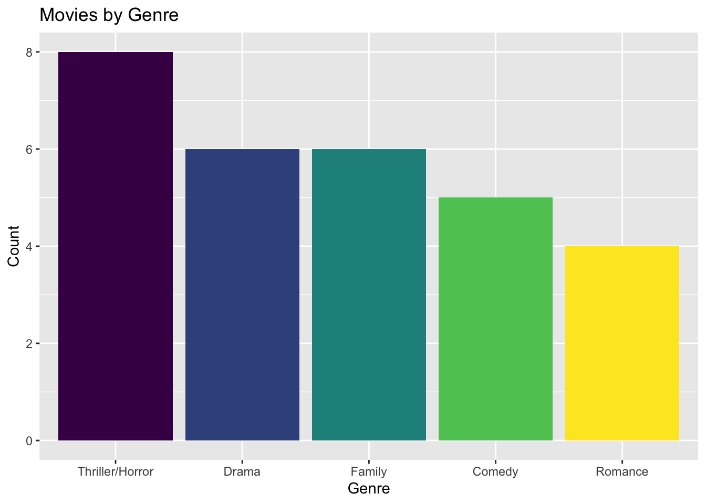
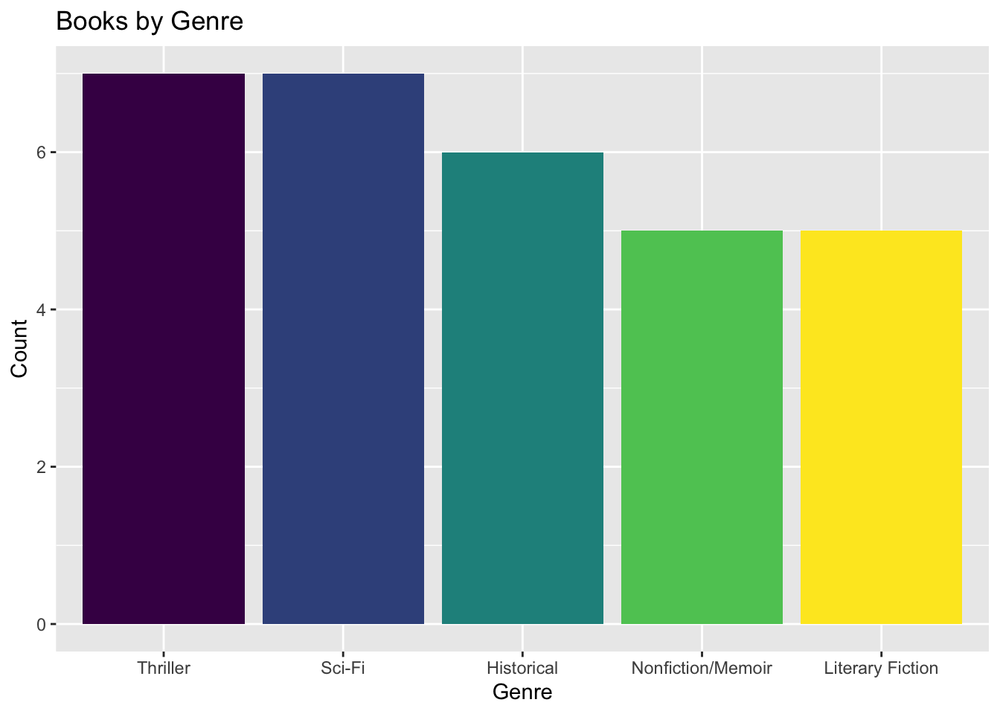
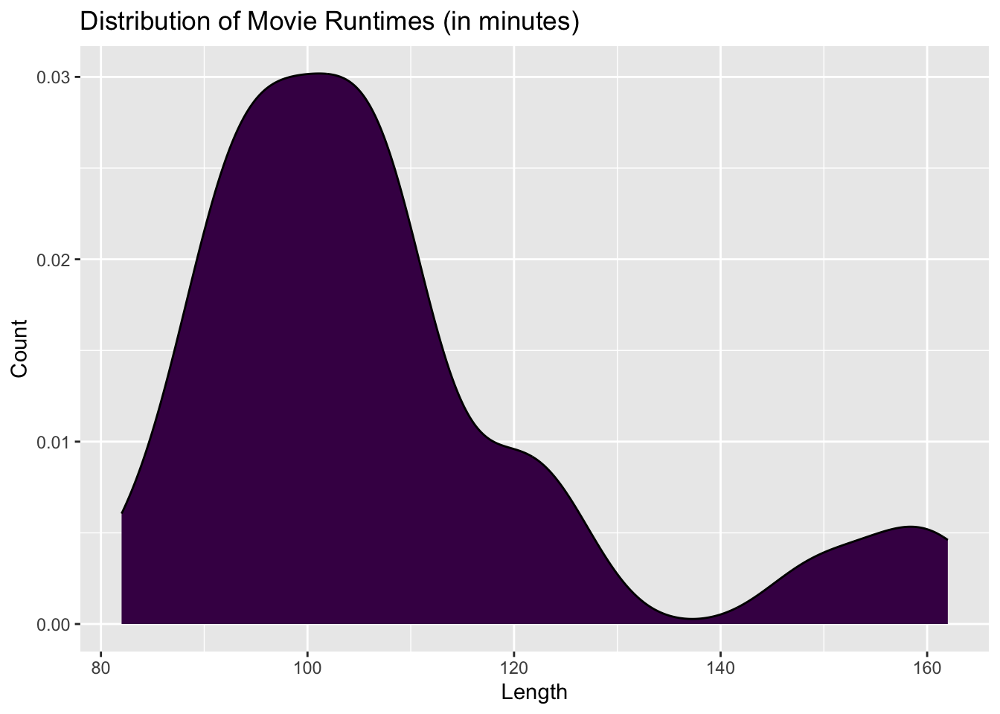
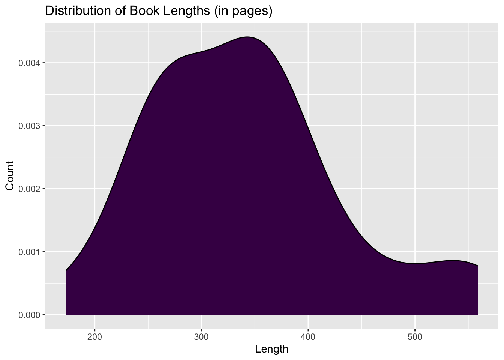

My best friends Laura and Gabby have great taste! With summer break around the corner, I want to select some good books to read and movies to watch during my time off from school. My goal for this piece is to develop a tool for choosing my next book/movie using my own preferences and data from Laura’s Letterboxd account and Gabby’s GoodReads account to generate recommendations.
I entered Laura and Gabby’s reviews into a spreadsheet that includes the following variables:
I recorded this information for 30 movies and 30 books.
A simple function/algorithm that returns a recommendation for me based on my preferences for the type of work, the genre, the length, and my friends’ ratings.
** fill in later
library(tidyverse)## ── Attaching core tidyverse packages ──────────────────────── tidyverse 2.0.0 ──
## ✔ dplyr 1.1.4 ✔ readr 2.1.4
## ✔ forcats 1.0.0 ✔ stringr 1.5.0
## ✔ ggplot2 3.5.2 ✔ tibble 3.2.1
## ✔ lubridate 1.9.3 ✔ tidyr 1.3.1
## ✔ purrr 1.1.0
## ── Conflicts ────────────────────────────────────────── tidyverse_conflicts() ──
## ✖ dplyr::filter() masks stats::filter()
## ✖ dplyr::lag() masks stats::lag()
## ℹ Use the conflicted package (<http://conflicted.r-lib.org/>) to force all conflicts to become errorslibrary(readxl)recs <- read_excel("LauraGabbyRecs.xlsx")
glimpse(recs)## Rows: 59
## Columns: 5
## $ Title <chr> "Project Hail Mary", "Zootopia 2", "Marty Supreme", "One Battle…
## $ Rating <dbl> 4.5, 5.0, 3.5, 3.5, 3.0, 5.0, 5.0, 3.5, 1.0, 1.5, 4.0, 4.0, 5.0…
## $ Type <chr> "Movie", "Movie", "Movie", "Movie", "Movie", "Movie", "Movie", …
## $ Genre <chr> "Comedy", "Family", "Drama", "Drama", "Thriller/Horror", "Drama…
## $ Length <dbl> 157, 108, 149, 162, 107, 125, 101, 98, 101, 95, 108, 98, 89, 10…Before creating my recommendation tool, I want to get a general sense of what movies/books are available in the dataset.
#ordering genres by frequency for both movies and books (after having run the bar graphs once)
recs$Genre_ordered <- fct_relevel(recs$Genre, 'Thriller/Horror', 'Drama', 'Family', 'Comedy', 'Romance', 'Thriller', 'Sci-Fi', 'Historical', 'Nonfiction/Memoir', 'Literary Fiction')
recs %>%
filter(Type == "Movie") %>%
ggplot(aes(x = Genre_ordered, fill = Genre_ordered)) +
geom_bar() +
scale_fill_viridis_d() +
theme(legend.position = "none") +
labs(x = 'Genre',
y = 'Count',
title = 'Movies by Genre')
recs %>%
filter(Type == "Book") %>%
ggplot(aes(x = Genre_ordered, fill = Genre_ordered)) +
geom_bar() +
scale_fill_viridis_d() +
theme(legend.position = "none") +
labs(x = 'Genre',
y = 'Count',
title = 'Books by Genre')
recs %>%
filter(Type == "Movie") %>%
ggplot(aes(x = Length, fill = "navy")) +
geom_density() +
scale_fill_viridis_d() +
theme(legend.position = "none") +
labs(x = 'Length',
y = 'Count',
title = 'Distribution of Movie Runtimes (in minutes)')
recs %>%
filter(Type == "Book") %>%
ggplot(aes(x = Length, fill = "navy")) +
geom_density() +
scale_fill_viridis_d() +
theme(legend.position = "none") +
labs(x = 'Length',
y = 'Count',
title = 'Distribution of Book Lengths (in pages)')